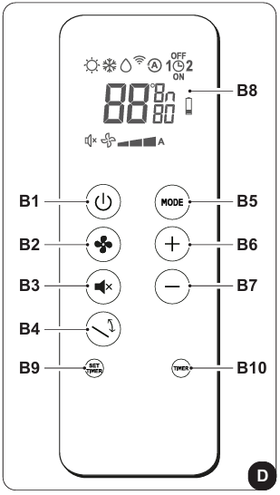
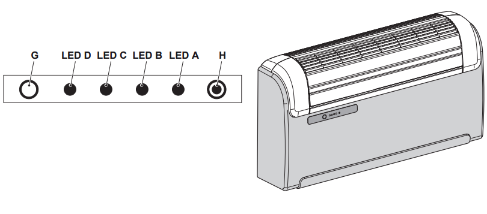

Instrucciones del aire acondicionado
Uso del mando a distancia
- Manejar con cuidado, evitar mojarlo o dejarlo caer.
- No exponerlo a la luz directa del sol.
- Retirar las baterías en caso de no utilizarlo durante mucho tiempo.
- Colocar el mando a distancia en una posición desde la que la señal pueda alcanzar el receptor del aparato (máximo 8 metros).
Descripción del mando a distancia (habitación)
-



Descripción del mando a distancia (salón)


Descripción de la pantalla del mando a distancia


Funciones del aire acondicionado
- Encender/Apagar: presionar el botón B1
 para encender o apagar el aire acondicionado.
para encender o apagar el aire acondicionado.
- Control de velocidad del ventilador: presionar el botón B2 para cambiar la velocidad: Baja > Media > Alta > Automática.
- Modo automático: ajusta automáticamente la temperatura y la velocidad del ventilador.
Presionar el botón B5
 hasta visualizar el símbolo D5 .
hasta visualizar el símbolo D5 .
- Modo deshumidificación: deshumidifica el ambiente. Presionar el botón B5
hasta visualizar el símbolo D3
 y la ventilación mínima D18
y la ventilación mínima D18  .
.
- Modo ventilación: no afecta la temperatura ni la humedad.
Presionar el botón B5
hasta visualizar el símbolo D18 de ventilación mínima .
- Modo calefacción: calienta el ambiente. presionar el botón B5
hasta visualizar el símbolo D1 .
- Control del flujo de aire: presionar el botón B4
 para activar/desactivar la oscilación continua del deflector móvil.
para activar/desactivar la oscilación continua del deflector móvil.
- Función SILENT: reduce gradualmente la velocidad del ventilador.
Presionar el botón B3
 para activar la función SILENT.
para activar la función SILENT.
Consejos para el ahorro de energía
- Cerrar puertas y ventanas durante el uso.
- No obstruir las vías de flujo de aire.
Diagnóstico y alarmas
- LED A: limpieza del filtro necesaria.
- LED B: alta temperatura de la batería.
- LED A + C parpadeando: funcionamiento continuo de la bomba. 
Advertencias generales
- No mover manualmente el flap de salida de aire.
- En caso de fugas de agua, apagar inmediatamente y desconectar el aparato.
Si tienes problemas, contacta con el anfitrión, Alessandro.